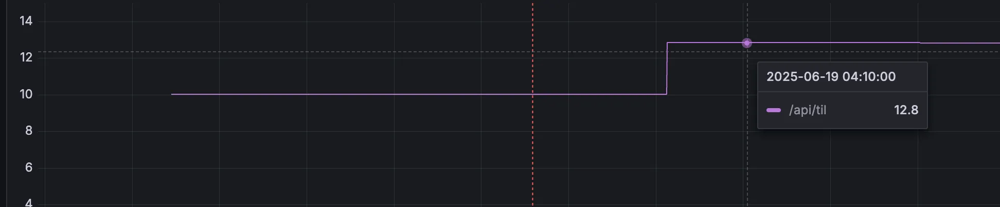

문제 상황
운영서버내 외부 API(OpenAI, Claude)와의 동기 통신으로 인한 병목으로 p99 응답 시간이 최대 13초까지 증가하여 사용자 경험이 크게 저하되었습니다. 태그 생성, 레퍼런스 생성을 순차 처리하여 단일 요청에도 평균 3~5초가 소요되었습니다.

p99 기준 13초 소요되는 API 포착
해결 과정
@TransactionalEventListener와
@Async를 활용하여 AI API 호출(태그 생성, 레퍼런스 생성)을 비동기로 처리하도록 개선했습니다.
TIL 생성 후 즉시 응답을 반환하고, 부가 기능들은 백그라운드에서 처리하여 응답 시간을 단축했습니다.
🔄 이벤트 기반 비동기 처리
Spring Event를 활용한 느슨한 결합 구조
⚡ 즉시 응답 반환
TIL 저장 완료 즉시 사용자에게 응답
🎯 백그라운드 처리
AI API 호출을 별도 스레드에서 처리